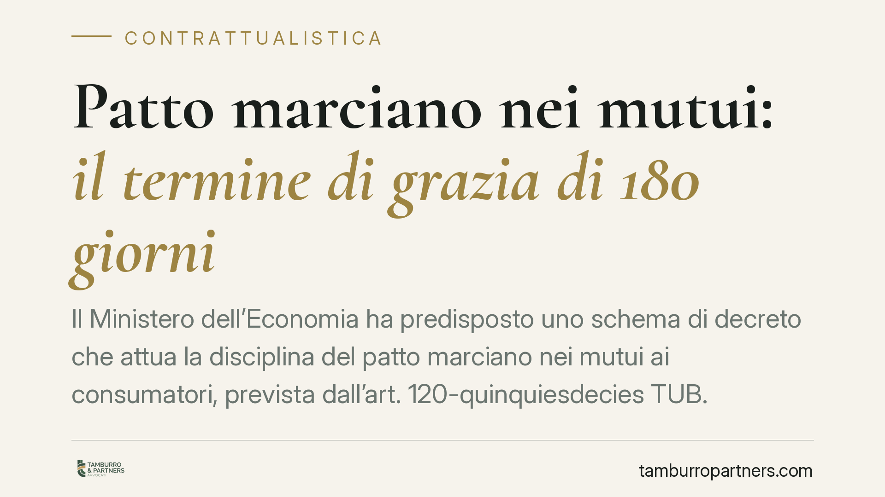

Patto marciano nei mutui: il termine di grazia di 180 giorni
Il Ministero dell'Economia ha predisposto uno schema di decreto che attua la disciplina del patto marciano nei mutui ai consumatori, prevista dall'art. 120-quinquiesdecies TUB. Fra le novità, un termine di grazia prima che un ritardo valga come inadempimento. Sul testo è intervenuto il Consiglio di Stato con il parere n. 1745/2026. Spieghiamo di cosa si tratta e perché conta prima di firmare.

Il meccanismo: cos'è il patto marciano
Il patto marciano è una clausola che consente al creditore, in caso di grave inadempimento del debitore, di soddisfarsi sul bene dato in garanzia. A differenza del patto commissorio — vietato dall'art. 2744 del Codice civile — il patto marciano è lecito perché contiene un correttivo essenziale: il bene viene stimato da un perito indipendente e, se il suo valore supera il debito residuo, l'eccedenza va restituita al debitore.
È questa restituzione dell'eccedenza, legata a una stima oggettiva, che distingue il meccanismo dalla pura appropriazione vietata dalla legge. Il creditore non incassa più di quanto gli spetta.
Inquadramento normativo
La cornice è l'art. 120-quinquiesdecies del Testo Unico Bancario (d.lgs. 385/1993), introdotto in attuazione della direttiva 2014/17/UE sui mutui ai consumatori. La norma consente alle parti di convenire che, in caso di inadempimento, il creditore si soddisfi sull'immobile a garanzia, con restituzione al consumatore dell'eventuale differenza fra il valore stimato e il debito.
La stessa disposizione individua una soglia di inadempimento qualificato, ancorata al mancato pagamento di un ammontare corrispondente a un numero significativo di rate mensili. La formulazione esatta e il comma di riferimento vanno letti sul testo vigente dell'articolo, più volte modificato nel tempo: è un dato da verificare puntualmente sul testo coordinato prima di qualunque valutazione contrattuale.
Lo schema di decreto del Mef è stato trasmesso per il parere al Consiglio di Stato, che si è pronunciato con il parere n. 1745/2026, formulando osservazioni e una critica specifica sulla disciplina dedicata all'unica abitazione del debitore.
Cosa prevede lo schema di decreto
Secondo lo schema, prima che un ritardo nei pagamenti sia qualificato come inadempimento rilevante, decorrerebbe un termine di grazia di 180 giorni. Il dato va confermato sul testo definitivo, non ancora pubblicato in Gazzetta Ufficiale. L'obiettivo dichiarato è offrire al consumatore una finestra per regolarizzare la propria posizione prima dell'attivazione del meccanismo satisfattivo.
Lo schema interviene inoltre su tre fronti: gli obblighi di consulenza e informazione a carico dell'intermediario, una tutela rafforzata per la prima casa e la verifica di non vessatorietà delle clausole, cioè del loro non determinare un significativo squilibrio a danno del consumatore.
Ambito applicativo: attenzione alla portata temporale
Un punto richiede cautela. Non è corretto affermare in modo netto che i mutui stipulati prima dell'entrata in vigore della disciplina restino automaticamente esclusi. L'art. 120-quinquiesdecies opera di regola per i contratti nuovi, ma la sua applicazione a rapporti già in essere è possibile a determinate condizioni — tipicamente tramite un accordo successivo fra le parti — e resta tema controverso.
Chi ha già un mutuo non deve quindi dare per scontato di esserne fuori: la verifica va fatta sul singolo contratto e sugli eventuali accordi integrativi proposti dalla banca.
Implicazioni pratiche
Per il consumatore che accende un mutuo, la presenza di una clausola marciana cambia lo scenario del default. In caso di difficoltà prolungata, il bene può essere acquisito dal creditore senza passare dall'esecuzione forzata ordinaria, ma con l'obbligo di stima e di restituzione dell'eccedenza.
I vantaggi potenziali sono tempi più rapidi e la salvaguardia del valore eccedente il debito. Il rovescio è la perdita dell'immobile in via stragiudiziale: ragione per cui la fase di stima e le modalità di nomina del perito sono il cuore della tutela.
Per banche e notai, lo schema impone un presidio documentale e informativo più stringente in sede di stipula.
Cosa fare in concreto
- Verificare se il contratto di mutuo contiene o propone una clausola marciana e leggerne con attenzione la formulazione.
- Controllare le modalità di nomina del perito e i criteri di stima dell'immobile: è il meccanismo che garantisce la restituzione dell'eccedenza.
- Accertare la soglia di inadempimento richiamata e l'eventuale termine di grazia, confrontandoli con il testo vigente della norma.
- Prima di sottoscrivere accordi integrativi su mutui già in essere, valutare con un professionista le conseguenze dell'estensione del patto marciano.
- Monitorare la pubblicazione del decreto in Gazzetta Ufficiale per riscontrare i dati definitivi, oggi ancora provvisori.
La disciplina non è definitiva: il testo del decreto non risulta ancora pubblicato in Gazzetta Ufficiale e i contenuti qui riportati potranno subire modifiche in sede di approvazione finale.
Disclaimer
Contributo informativo a cura di Tamburro & Partners - Avv. Giuseppe Tamburro. Non costituisce parere legale.
Ogni contratto ha il suo equilibrio.
Se vuoi una revisione delle clausole o una redazione su misura, scrivi allo studio. Ti rispondiamo entro un giorno lavorativo.